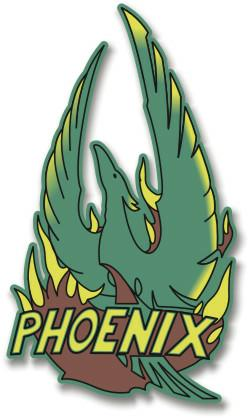

|
Terrestri - Phoenix
|
|
|
|  |

|
Tipo: Missile Titan V adattato
Dimensioni:: 32,91 metri di lunghezza totale, 3,35 metri di diametro
massimo
Lunghezza della navetta: 14,63 metri
Lunghezza del propulsore: 18,28 metri
Equipaggio: 3
La Phoenix è stata la prima nave spaziale costruita dai terrestri
capace di velocità curvatura. Concepita e realizzata dal dottor
Zefram Cochrane
e dal suo staff, tra cui Lily Sloane, fu costruita all'incirca 10 anni dopo la
fine della Terza Guerra Mondiale in un complesso missilistico del Montana, nel
nordamerica. Cochrane sfruttò un missile Titan (residuato della guerra
nucleare) sostituendo la testata bellica con un abitacolo in grado di contenere
tre persone, utilizzando il nucleo atomico quale fonte d'energia per il primo
motore CDP (Continuum Distortion Propulsion, propulsione a distorsione del
continuum).
Lanciata il 4 Aprile 2063, la
sua traccia di curvatura fu individuata dalla
T'Plana-Hath,
in ricognizione nel sistema solare terrestre, stabilendo così lo storico Primo
Contatto con una civiltà aliena.
Anni dopo, la Phoenix fu esposta nello Smithsonian Institute.